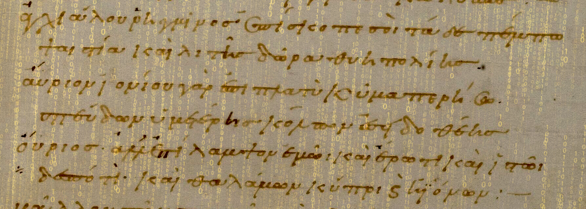

Court résumé de l’article de Bamman, D et Crane, G. (2009).

Bamman, D. et Crane, G. (2009). Structured Knowledge for Low-Resource Languages: The Latin and Ancient Greek Dependency Treebanks.
Cet article sert à décrire la création de corpus arborés (de larges collections de données annotées) pour le latin et le grec ancien. Deux objectifs sont poursuivis pour ces corpus classiques : découvrir des connaissances lexicales et identifier des modèles de réutilisation de textes.
Contexte : les techniques de fouille de texte expriment leur potentiel pour des corpus généralement anglais ou germanophone car ces derniers sont très étendus. Les ressources disponibles pour les corpus en langues anciennes (comme le grec et le latin) parraissent bien pâles à côté. Le constat réalisé tend à montrer que le bon fonctionnement des algorithmes de fouille de texte est quantitativement proportionnel à la quantité de textes disponibles dans un corpus : verdict, Bamman et Crane estiment que toutes les informations d’un texte ne sont pas extraites et qu’ils peuvent s’y atteler, notamment sur les corpus sous-représentés comme latin et grec.
Le corpus sur lesquels s’appuie cette étude sont composés d’une large collection de phrases syntaxiquement annotées, appelée treebanks, dont chaque mot fait l’objet d’une explicitation de sa relation aux autres mots de la phrase dans laquelle il s’inscrit. Ces données peuvent être représentées sous forme de graphes puis encodées en XML. Les corpus latins utilisés sont ceux de la Prague Dependency Treebank, de l’Index Thomisticus et le corpus PROIEL du Nouveau Testament. Les corpus en grec ancien sont plus larges et comportent des écrits tels que les tragédies grecques, Platon, les récits d’Homère (L’Iliade et L’Odyssée), et bien d’autres.
La première approche des corpus est lexicale : elle permet de définir ce que chaque mot veut dire et ses interactions avec les autres mots. Ensuite, la deuxième méthode appliquée au corpus consistait à mettre les corpus et leurs traductions dans différentes langues en parallèle pour trouver le sens des mots par équivalence. Ces informations permettent de mieux définir les relations entre les mots. Les résultats obtenus dans la plupart des recherches sur la réutilisation de texte (et leurs variations) fonctionne comme indiqué précédemment : les méthodes sont adatpées aux langues vivantes mais pas réellement au corpus des langues anciennes. Malgré la petite taille du corpus (50 000 mots), les méthodes permettent d’élaborer 12 caractéritisques syntaxiques pour chaque mot dans une phrase (des combinaisons de la représentation au niveau du mot, sous la forme de token, de lemme ou simplement de partie du discours).